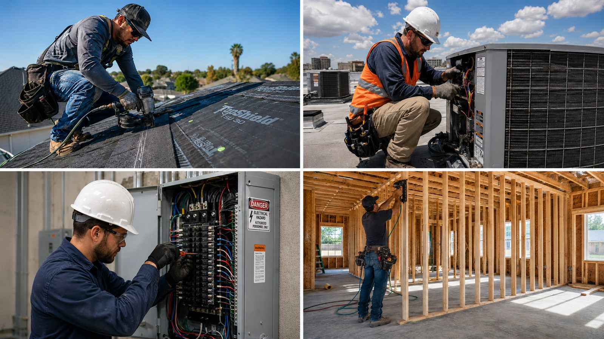

Workers' Compensation Insurance
Determining whether your Florida business is required to carry workers' compensation insurance depends on several statutory factors, including industry classification and employee count. This guide explains those requirements in plain language and connects you with a fast, free quote.
What Is Workers' Compensation Insurance?
Workers' compensation insurance — commonly called “workers' comp” — provides medical treatment and partial wage replacement to employees hurt or made ill on the job while shielding employers from most resulting lawsuits, and most Florida businesses that carry it also carry general liability insurance, since the two coverages address entirely different risks: workers' comp protects your employees, while general liability protects your business against claims from customers, vendors, and the public.
Is It Required?
In most circumstances, yes. Florida law obligates the majority of employers to maintain workers' compensation coverage, with the precise threshold determined by industry classification and total employee count.
Construction Businesses
Construction employers are held to the strictest standard: coverage becomes mandatory upon hiring just one employee, extending to owners unless a formal exemption has been obtained.
Non-Construction Businesses
Non-construction employers must secure coverage once their workforce reaches four or more employees, including full-time, part-time, and most corporate officers.
Farms & Agriculture
Agricultural operations must carry coverage once an employer maintains six or more regular employees, or twelve or more seasonal workers.
What It Costs
Premiums are governed by payroll, classification codes, and claims history. Florida is a state-rated jurisdiction, so every carrier begins from an identical rate schedule.
Staying Safe & Legal
Operating without mandatory coverage exposes an employer to stop-work orders and substantial civil penalties.
Who Must Carry Workers' Comp in Florida?
Coverage requirements vary according to industry classification and entity structure, as set forth by the Florida Division of Workers' Compensation.
Construction employers must obtain workers' compensation coverage upon hiring their first employee — a requirement that extends to corporate officers and LLC members unless an approved exemption is on file. Florida's construction threshold is among the most stringent in the nation. (Florida Division of Workers' Compensation)
Most non-construction employers become subject to the coverage mandate upon reaching four employees, a figure that includes full-time staff, part-time staff, and most corporate officers or LLC members. (Florida Division of Workers' Compensation)
Agricultural employers must secure coverage once they employ six or more regular workers, or twelve or more seasonal workers who work more than thirty days in a single season, or more than forty-five days within a calendar year. (Florida Division of Workers' Compensation)
Florida generally classifies LLC members and corporate officers as employees for coverage purposes unless an approved exemption has been filed. Sole proprietors and partners in non-construction industries are not automatically counted as employees, though they may elect coverage by filing Form DWC-251 with the Division. (Florida Division of Workers' Compensation)
Employers domiciled outside Florida who perform work within the state must notify their insurance carrier in advance. Florida must be specifically endorsed on the policy's information page, or a separate Florida policy may be required, unless an extraterritorial reciprocity provision applies. (Florida Division of Workers' Compensation)
What Does It Cover?
Usually Covered
- Doctor visits and hospital care
- Surgery and physical therapy
- Prescription medicine
- Lost pay while an employee recovers
- Job illnesses, like chemical exposure or hearing loss from noise
- Death benefits for a worker's family
Usually Not Covered
- Injuries that happen outside of work
- Self-inflicted injuries
- Injuries from being drunk or high
- Horseplay or fooling around
- Injuries while committing a crime
Compensability is determined on a case-by-case basis under Chapter 440 of the Florida Statutes. (Florida Division of Workers' Compensation)
Subcontractors: What You Need to Know
General contractors are obligated to verify that every subcontractor maintains valid workers' compensation coverage before work commences. Should a subcontractor lack coverage, Florida law deems that subcontractor's employees to be employees of the general contractor, exposing the contractor to direct liability for medical benefits and wage-loss payments in the event of injury. (Florida Division of Workers' Compensation)
Acceptable documentation includes the following:
- The subcontractor's policy information page
- Proof of coverage from Florida's online database
- A certificate of insurance showing active coverage
- An exemption certificate, if they qualify for one

How Much Does It Cost?
Your price is based on three main things:
1. Payroll
The employer's total annual payroll.
2. Type of Work
Higher-risk occupations, such as roofing, carry substantially higher classification rates than clerical or administrative roles.
3. Claims History
A favorable claims history typically yields a lower experience modification factor and, correspondingly, a reduced premium.
Ways to Lower Your Price
- Start a workplace safety program
- Keep a drug-free workplace program
- Report injuries right away
- Bring injured workers back on light duty when you can
- Double-check your payroll and job codes for mistakes
- Compare quotes from more than one insurance company
Because Florida's rate structure is uniform across carriers for each classification code, the choice of insurer should hinge primarily on claims service and support rather than price alone.
Top-Rated Carriers We Work With
As an independent Florida broker, GL Insurance Brokers isn't tied to one insurance company. We compare quotes from trusted, top-rated carriers, including:
Many of these same carriers also write general liability policies for Florida businesses, which can often be bundled with your workers' comp coverage for a combined quote.
Florida Workers' Comp FAQ
Yes. Most Florida businesses are required to maintain workers' compensation insurance. The precise obligation depends on industry classification, total employee count, and the entity's legal structure. (Florida Division of Workers' Compensation)
Construction employers must carry coverage upon employing one or more workers. Most non-construction employers become subject to the requirement at four or more employees, while agricultural employers must comply once they reach six or more regular workers, or twelve or more seasonal workers. (Florida Division of Workers' Compensation)
Premiums are calculated using three principal variables: total payroll, the classification codes assigned to each job duty, and prior claims history. Employers may also qualify for premium credits by implementing a certified workplace safety program or a Drug-Free Workplace Program.
Yes. A construction business with even a single employee is obligated to maintain coverage, a requirement that extends to owners themselves unless an approved exemption has been filed. Florida's construction threshold ranks among the most stringent nationwide. (Florida Division of Workers' Compensation)
Generally, yes. Florida classifies LLC members and corporate officers as employees for purposes of determining coverage obligations, unless an approved exemption has been filed on that individual's behalf. (Florida Division of Workers' Compensation)
It depends on entity type and industry. In most non-construction businesses, a sole proprietor is not automatically classified as an employee, though coverage may be elected by filing Form DWC-251 with the Division. Construction businesses are governed by a considerably stricter standard. (Florida Division of Workers' Compensation)
The employer must notify its insurance carrier prior to commencing work in Florida. If the existing policy does not extend coverage to Florida, a separate Florida policy is required, and Florida must be specifically endorsed on the policy's information page, absent an applicable reciprocity agreement. (Florida Division of Workers' Compensation)
Yes. Prior to the commencement of work, a general contractor must verify that each subcontractor maintains valid coverage. Absent such coverage, the subcontractor's employees are deemed employees of the general contractor, who then bears direct liability for any resulting benefits. (Florida Division of Workers' Compensation)
Yes. Florida permits qualifying business owners to apply for an exemption from coverage requirements. An approved exemption removes only the owner from the coverage obligation; any employees of the business must still be covered. (Florida Division of Workers' Compensation)
The Division may issue a stop-work order, immediately suspending all business operations, in addition to imposing substantial civil penalties. The employer may also become personally liable for an injured worker's medical expenses and lost wages. (Florida Division of Workers' Compensation)
The Florida Division of Workers' Compensation maintains a public Proof of Coverage database, allowing any party to verify whether a business's coverage is currently active before entering into a business relationship. (Proof of Coverage Database)
No. Coverage generally extends to injuries and illnesses arising out of and in the course of employment, but it typically excludes self-inflicted injuries, injuries sustained while impaired by drugs or alcohol, horseplay, and injuries incurred during the commission of a crime.
Notice should be provided as promptly as possible. Florida law generally allows thirty (30) days from the date of the accident, or from the date the injury is discovered to be work-related, to notify the employer; failure to do so may result in denial of the claim. (Fla. Stat. § 440.185)
Generally, no. The employer's insurance carrier selects the initial authorized treating physician. If the employee is dissatisfied with that physician, Florida law provides a one-time right to request a change. (Fla. Stat. § 440.13)
In most cases, no. Workers' compensation is generally deemed the exclusive remedy for a work-related injury, precluding a separate civil action against the employer. Narrow exceptions exist, such as circumstances involving an employer's intentional harm.
Effective cost-control measures include establishing a certified workplace safety program, maintaining a Drug-Free Workplace Program, reporting injuries promptly, returning injured employees to light-duty work when feasible, and periodically auditing payroll figures and job classification codes for accuracy.
In most cases, yes. Workers' compensation and general liability insurance cover entirely different exposures: workers' comp addresses employee injuries and illnesses, while general liability addresses bodily injury, property damage, and advertising injury claims brought by customers, vendors, or other third parties. Florida law does not require general liability the way it requires workers' comp, but most commercial leases, client contracts, and government projects require proof of both before work can begin.
Workers' Comp Rates by Contractor Trade
See NCCI class codes, rates, and requirements for your specific trade:
Florida Cities We Serve
We help businesses get workers' comp quotes all across Florida, including:
Please note: This page is for general, easy-to-read information only. It is not legal or insurance advice, and it is not a quote or offer of coverage. Florida rules, prices, and coverage details can change and depend on your specific business. Contact us directly for an exact quote.